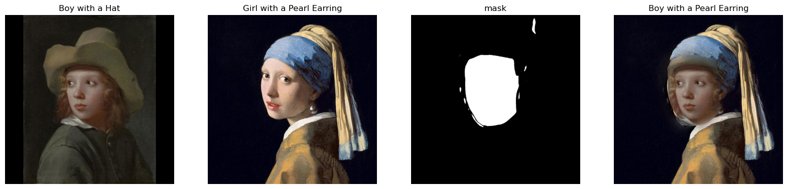

In this project, I did a manual correspondance between images, created a morph and warp of my face into another person's face, computed the average face of a population, and generate a caricature of myself by extrapolating from the population mean. Besides, I also use those techniques to somehow change the gender of my own face.
First, I first label the corresponding points using the correspondance tool provided by last year's student. Secondly, I loaded facial keypoints from json file created by that tool, Thirdly, I computed the midpoint of corresponding keypoints between the two faces. Then, I use Delaunay triangulation on that midpoint. Also I visualized that triangulation on both images. Here is sthe result:

I first cropped my face and my friend Nancy's face to have the same dimenstion and use the key points giving by corresponding tool, I computed an average face shape using the midpoints of corresponding keypoints from both faces. Then, I use Delaunay triangulation, and calculated affine transformations for each triangle in the images and warped them to the average shape. Finally, I did a cross-dissolve to blend two faces to get a midway face. Here is the result:

I separate my image into its RGB channels. Then, I applied a 2D Gaussian blur to each channel to obtain the low-frequency components. By subtracting the blurred image from the original image, I get the high-frequency image. Then I can use these high-frequency image to sharpen the image by adding them back with alpha. That is say , image + alpha * (image - blur_img). Here are the resulting images of two examples:


Then for evaluation, I pick a sharpen image and blur it and resharpen it. In my view, the resharpe image does not as good as original image. It is not really natrual.

Now, it is time to blend image! I first aligned my two images, and then applied a Gaussian filter with different sigmas to create low-frequency image of each image. Then I get high-frequency image by subtracting the blurred image from the original ones. Next, you generate two hybrid images by combining the low frequencies of one image with the high frequencies of the other. Here are my results of several pictures.


Although I get the hybrid moon&earth and LBJ&AD, my favourite image is still derek&nutmeg! Let's do fourier analysis.

I first construct a Gaussian stack for both apple and orange and the mask by repeatedly applying the Gaussian filter. Then I also create Laplacian stacks by subtracting each Gaussian level in the stack. I create a helper function create_mask to simply generate a mask that splits the image into two halves. Then, I blend the apple and orange images at each level of the Laplacian stack using the mask. This results in a combined image at each level.

I first construct two examples using vertical stack and horizontal stack except the origiinal orapple, which is following:


Then I do following irregular mask:
